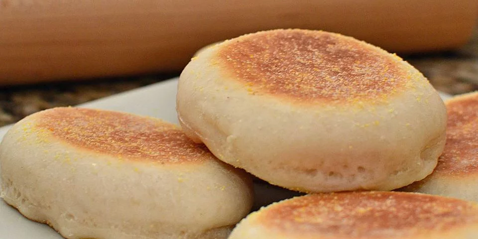

English muffins

Get dem buns warm and toasty
Now that I drove everyone away with that title, we can focus on some buns
I adapted this for euros because well...corn is a USA thing
Ingredients
- 450g flour
- packet of yeast(17g)
- 125 ml whole milk
- 125 ml of warm water
- Tbsp of sugar
- Tsp of salt
- Butter
Putting it all together
- Combine millk, water and yeast, mix it up and leave it for 15 mins
- Mix flour, sugar and salt
- Combine the liquids and the solids and knead 'em
- I SAID KNEAD 'EM
- When it goes from hetero to homo, you let that thing rest for an hour
- After the hour is up, you take that big ball of dough, deflate it and roll it thicc
- Not too thick, like the thickness of your thumb thick, if you have the mits of a sailor, use a ruler or your appendage
- After rolling it out, take a cup, cut them circles out, lightly cover them with some bread crumbs if you have any, or don't, not that big of a deal
- Put the things on a skillet, and on a medium temp toast them. At the same time, heat up the oven to 90°C and after toasting just toss them in
- After the last one is done toasting, leave them in for another 10 minutes and then turn off the heat and put them on a rack to cool down
Now put it all on a tray and serve with some jam, bakalar, whatever, it's bread for christsake's
Retvrn to main page